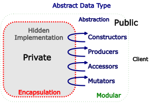

Why would we create an ADT?
Contents
Why would we create an ADT?#
Works correctly and will keep working
Everyone knows what it does
Can accommodate implementation changes
Key understanding#
An ADT is characterized by the operations you can perform on it
These operations constitute its Abstraction. This is the public part, visible to clients who use the type.
The ADT separates the use of a data structure in a program from the way the data structure has been implemented in the programming language
This removes the problem of users making assumptions about the ADT’s internal implementation
The aim of an abstract data type is to reduce the complexity of the problem by removing the ‘how’. The user does not need to know how something works, they just know what it can do. This is done by restricting the user to only being able to interact with the ADT by using its operations. How each operation works is not important, only that the user knows the operation exists, any inputs the operation requires, and what the output will be.
In this way the user can be confident that the ADT will not change in the future, and they only need to understand and use the operations available. A simple, consistent idea is created and communicated to anyone who wants to use the ADT, and the complexity of how it works is hidden completely from the user. Additionally, the user can be confident that the ADT can be reused as required and also does not allow for any ‘unknown’ method of modifying the internal information stored in the ADT.
Principles of ADTs#
We can specify these attributes as principles that an ADT embodies:
Abstraction#
Hiding low-level information and presenting a simpler, higher-level idea.
Modularity#
Deconstructing a system into parts or modules. Each of these can be implemented, tested, and reused as separate objects.
Encapsulation#
Creating a boundary around a module so that all internal behaviour of the module is handled by the module. There is no other way to change the module’s internals, ensuring its integrity.
Additionally, we can also state that ADTs provide:
Information Hiding#
The implementation of the module is not visible to the rest of the system, meaning that it can be changed as needed without imposing changes on the rest of the system as well.
Separation of Concerns#
A feature (concern) is the responsibility of a single module. It is not spread across multiple modules, reducing complexity and improving understanding.
Classifying ADT Operations#
The operations an ADT supports are how users interact with and understand the type. Each operation is defined by the inputs it requires (if any) and then the output it provides (if any). Operations can categorized into four main groups, and these groups represent the way the operation ‘acts’:
Constructs a new object of the type. A constructor may take other types as arguments to create the object, but not an object of the type being constructed.
Produce a new object of the type from one or more existing objects of the type.
Access the type and return objects of a different type.
Change objects in some way.
You will note that these groups are known by multiple different names at times. The name of the group is not important, it is the idea of what the group represents that is important. Creators or constructor operations? It doesn’t matter. Just recognise that these operations create new objects of the type, another type of operations manipulate the type and so on.
{kind=link}
Designing an Abstract Data Type#
ADTs are not magic and you can make your own. There are many hundreds of different ADTs already widely known, often with only a small difference separating different types. Some things to remember when designing an ADT are:
aim for a few, simple operations
aim for these operations to support being combined in powerful ways
avoid complex operations
each operation should have a well defined purpose
each operation’s behaviour should be coherent and not something just to support special cases
the set of operations should allow the type to be useful for its intended purpose and audience
types should be either generic or domain specific, but not a mix of the two
each type must be representation independent, with changes in implementation having no effect on code outside the type itself
Note
Abstract data types : are characterized by their operations
Operations : can be classified as constructors, producers, accessors, or mutators
An ADT’s specification : is its set of operations and their specifications
A good ADT : is simple, adequate, coherent, and independent of its implementation